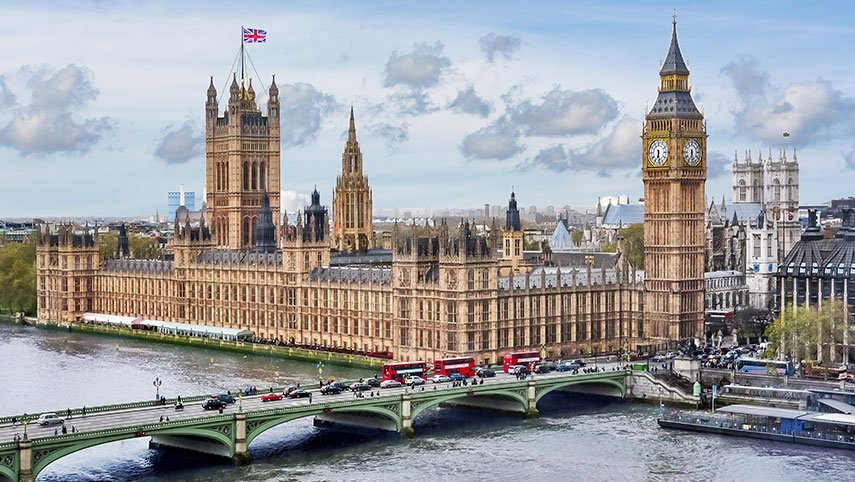

RIO DE JANEIRO
Rio de Janeiro (informalmente referido como Rio[6]) é um município brasileiro, capital do estado homônimo, situado no Sudeste do país. Maior destino turístico internacional no Brasil,[7] da América Latina e de todo o Hemisfério Sul (em 2008),[8] a capital fluminense é a cidade brasileira mais conhecida no exterior,[9] funcionando como um "espelho", são chamados de cariocas.
Voltar ao topoFLORIANÓPOLIS
Florianópolis é a capital do estado brasileiro de Santa Catarina, na Região Sul do país. O município é composto pela ilha principal, a ilha de Santa Catarina, a parte continental e algumas pequenas ilhas circundantes. A cidade tem uma população de 516 524 habitantes
Voltar ao TopoRECIFE

Recife é um município brasileiro, capital do estado de Pernambuco, localizado na Região Nordeste do país. Com área territorial de aproximadamente 218 km², é formado por uma planície aluvial, tendo as ilhas, penínsulas e manguezais como suas principai
Voltar ao TopoSALVADOR

Salvador é a capital do estado brasileiro de Santa Catarina, na Região Sul do país. O município é composto pela ilha principal, a ilha de Santa Catarina, a parte continental e algumas pequenas ilhas circundantes. A cidade tem uma população de 516 524 habitantes
Voltar ao TopoSÃO PAULO
São Paulo é a capital do estado brasileiro de Santa Catarina, na Região Sul do país. O município é composto pela ilha principal, a ilha de Santa Catarina, a parte continental e algumas pequenas ilhas circundantes. A cidade tem uma população de 516 524 habitantes
Voltar ao TopoROMA
Roma é a capital do estado brasileiro de Santa Catarina, na Região Sul do país. O município é composto pela ilha principal, a ilha de Santa Catarina, a parte continental e algumas pequenas ilhas circundantes. A cidade tem uma população de 516 524 habitantes
Voltar ao TopoVATICANO
Vaticano Roma é a capital do estado brasileiro de Santa Catarina, na Região Sul do país. O município é composto pela ilha principal, a ilha de Santa Catarina, a parte continental e algumas pequenas ilhas circundantes. A cidade tem uma população de 516 524 habitantes
Voltar ao TopoLONDRES
Londres é a capital do estado brasileiro de Santa Catarina, na Região Sul do país. O município é composto pela ilha principal, a ilha de Santa Catarina, a parte continental e algumas pequenas ilhas circundantes. A cidade tem uma população de 516 524 habitantes
Voltar ao TopoWASHINGTON D.C.
Washington é a capital do estado brasileiro de Santa Catarina, na Região Sul do país. O município é composto pela ilha principal, a ilha de Santa Catarina, a parte continental e algumas pequenas ilhas circundantes. A cidade tem uma população de 516 524 habitantes
Voltar ao TopoMONTEVIDEO

Recife é é a capital do estado brasileiro de Santa Catarina, na Região Sul do país. O município é composto pela ilha principal, a ilha de Santa Catarina, a parte continental e algumas pequenas ilhas circundantes. A cidade tem uma população de 516 524 habitantes
Voltar ao Topo